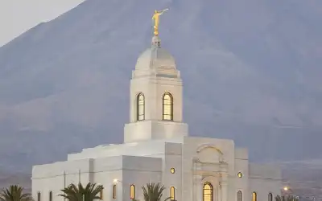
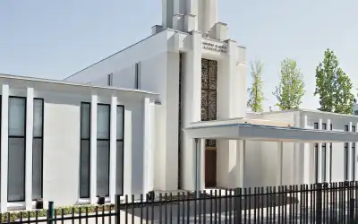
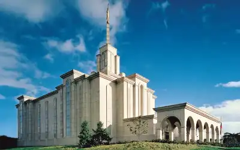
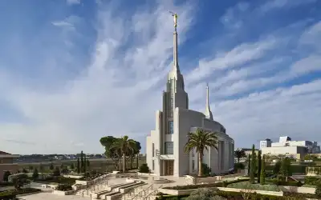

Temple of Arequipa, PeruTemple of Lima, PeruTemple of Trujillo, PeruTemple of Los Olivos, PeruTemple of San Diego, California

Temple of Santiago de Chile, Chile

Temple of Bogota, Colombia

Temple of Italia, RomaTemple of La Paz, Bolivia